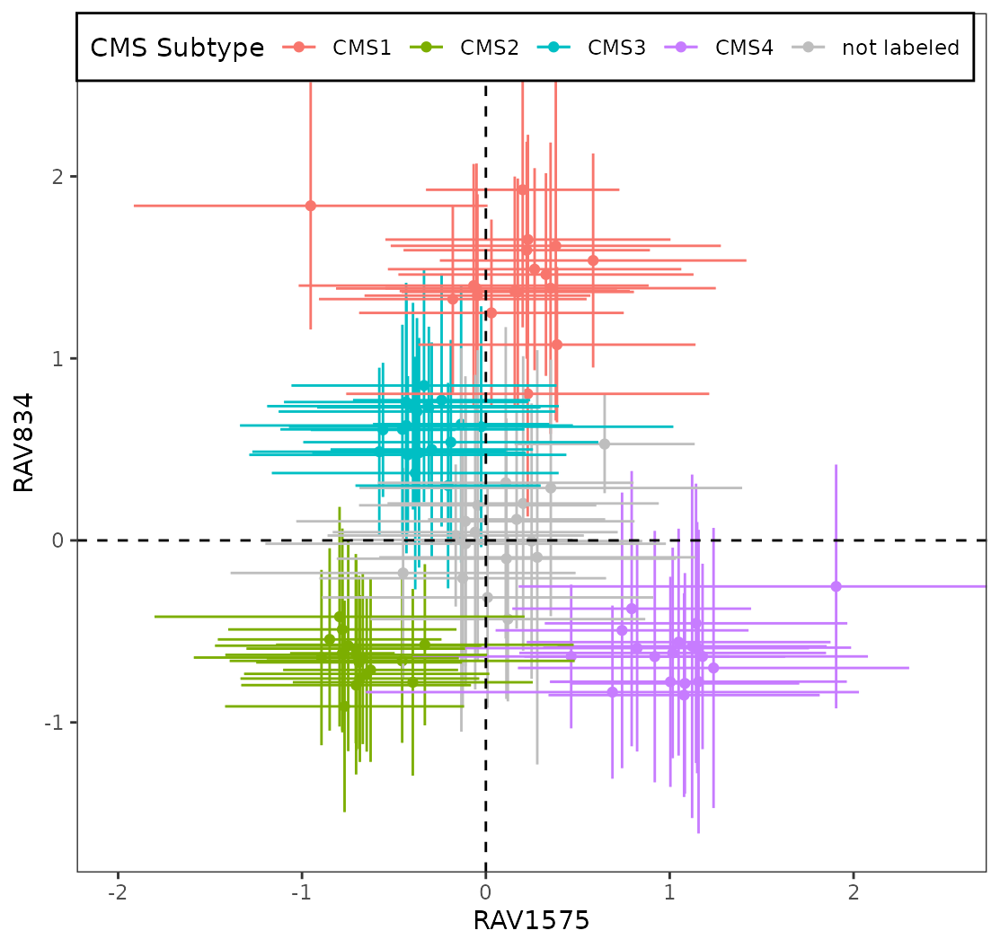
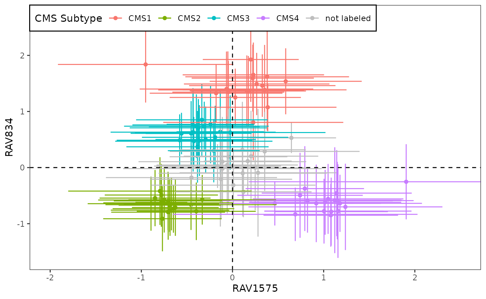
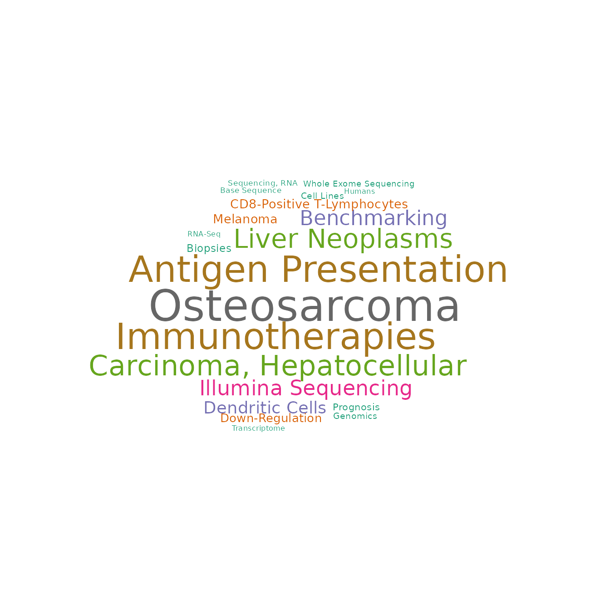
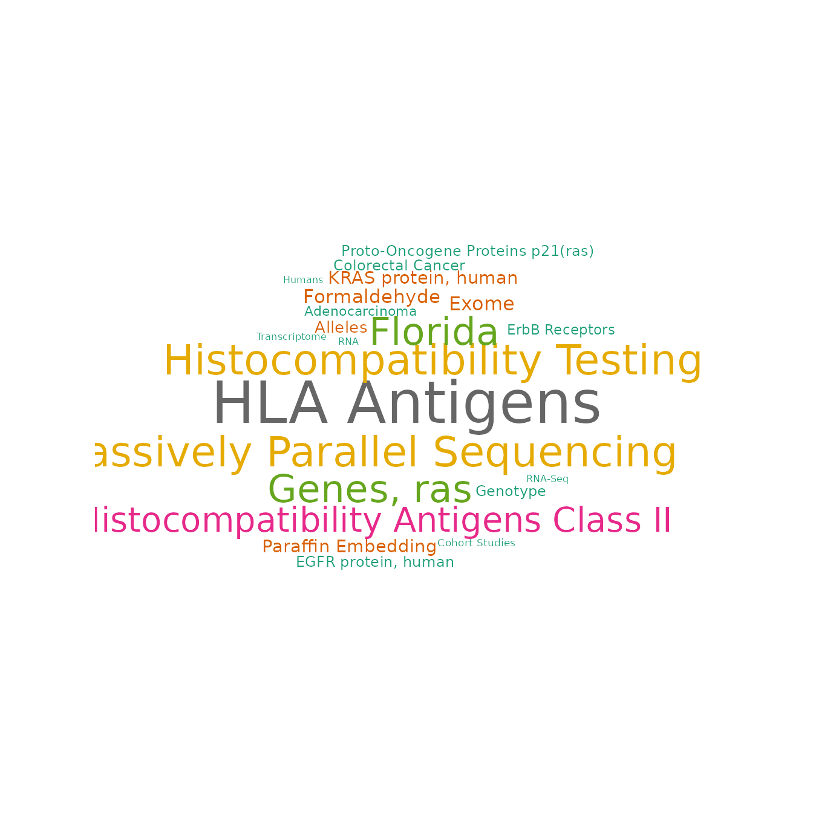
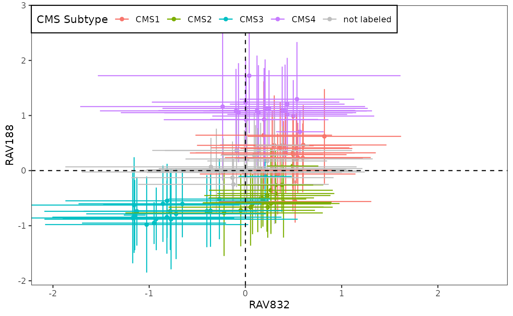
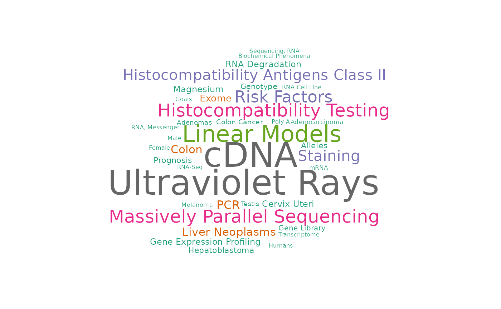
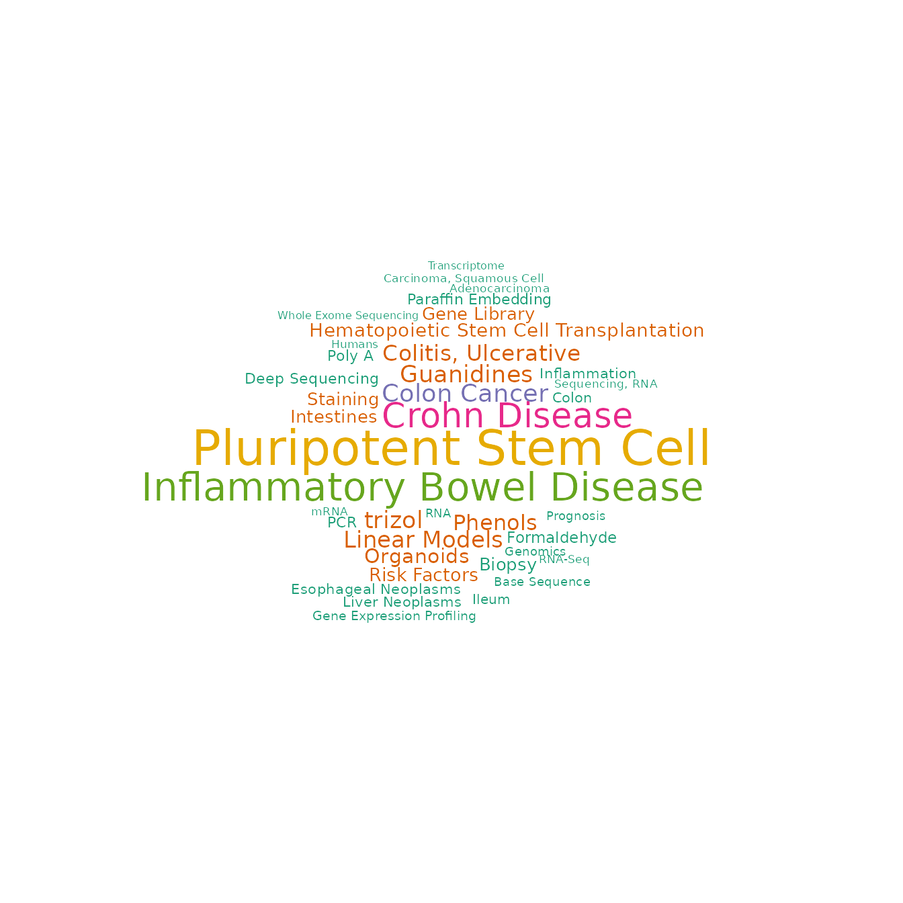
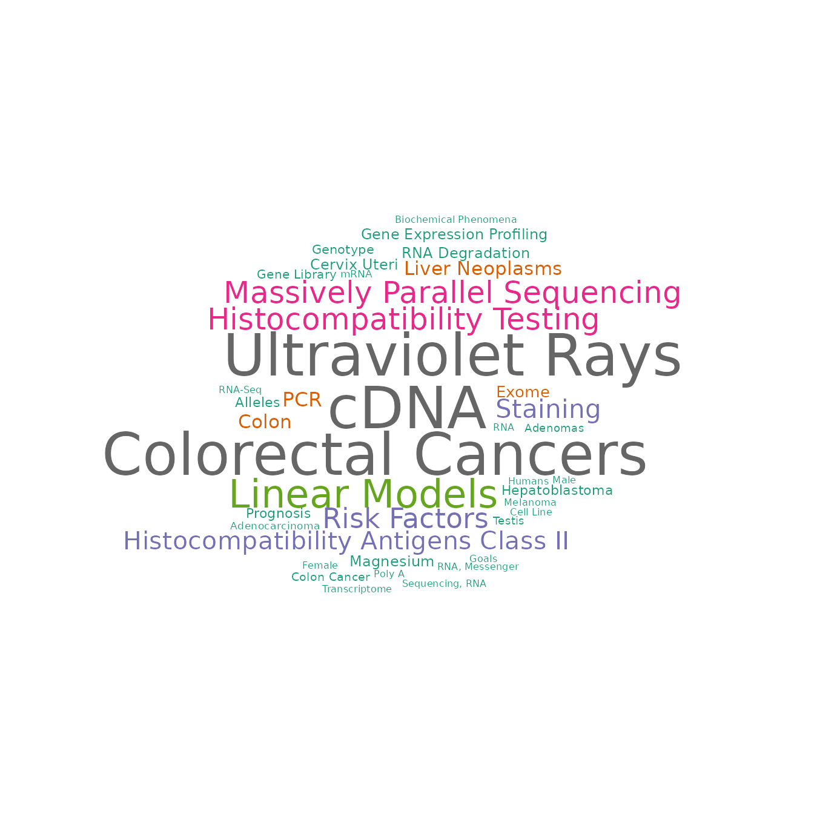
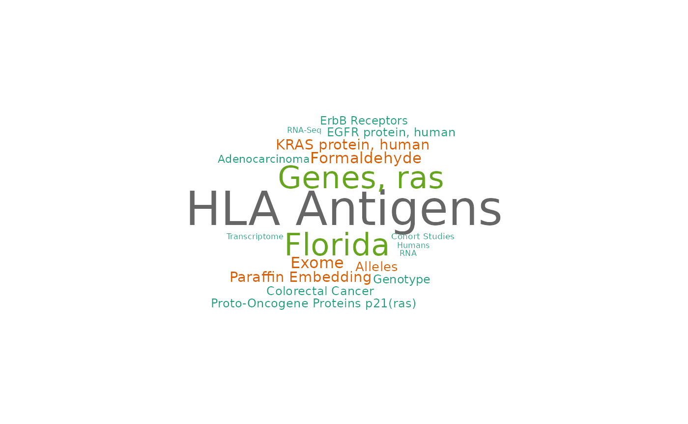
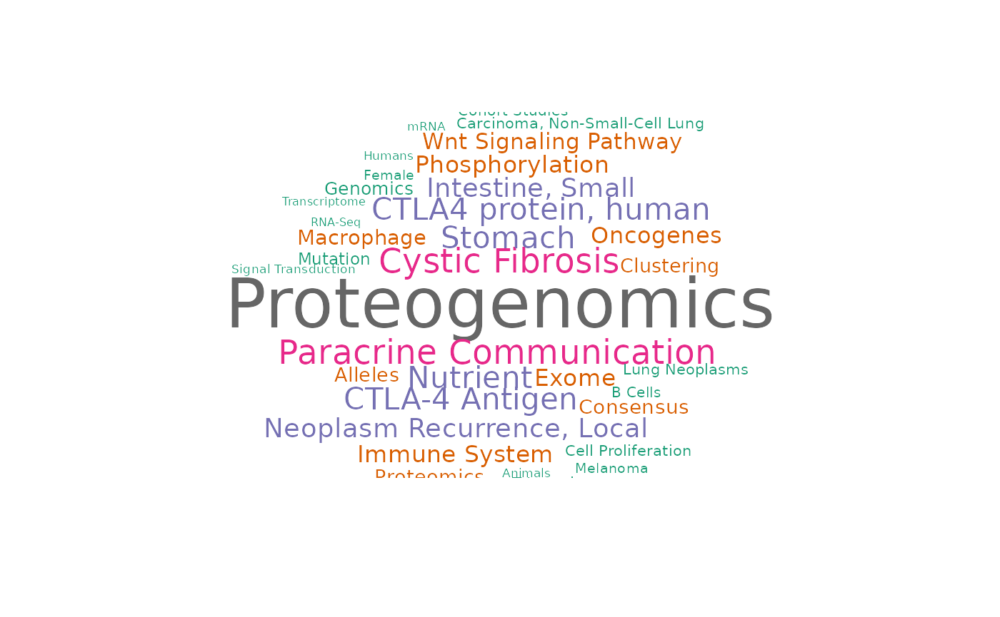

Repeat CRC paper’s Figure 4A
Sehyun Oh
2020-11-02
Source:vignettes/CRC/repeat_Fig4A.Rmd
repeat_Fig4A.RmdSetup
In this vignette, we are reproducing Figure 4A of the CRC paper using PCAGenomicSignatures.
PCAmodel
## class: PCAGenomicSignatures
## dim: 13934 4764
## metadata(6): cluster size ... MeSH_freq updateNote
## assays(1): model
## rownames(13934): CASKIN1 DDX3Y ... CTC-457E21.9 AC007966.1
## rowData names(0):
## colnames(4764): RAV1 RAV2 ... RAV4763 RAV4764
## colData names(4): RAV studies silhouetteWidth gsea
## trainingData(2): PCAsummary MeSH
## trainingData names(536): DRP000987 SRP059172 ... SRP164913 SRP188526
## [1] "536 refine.bio studies/ top 90% varying genes/ GSEA with MSigDB C2"By PCAGenomicSignatures
Most similar to PCSS1/PCSS2
sampleScore1 <- 1575 sampleScore2 <- 834 source("R/Fig4A_plotting.R", print.eval = TRUE)

## `summarise()` regrouping output by 'study' (override with `.groups` argument)
wordcloud
drawWordcloud(PCAmodel, sampleScore1) ## Warning in wordcloud::wordcloud(words = all$word, freq = all$freq, scale = ## scale, : Drug Resistance, Neoplasm could not be fit on page. It will not be ## plotted. ## Warning in wordcloud::wordcloud(words = all$word, freq = all$freq, scale = ## scale, : Antigen Presentation could not be fit on page. It will not be plotted. ## Warning in wordcloud::wordcloud(words = all$word, freq = all$freq, scale = ## scale, : Carcinoma, Hepatocellular could not be fit on page. It will not be ## plotted.

drawWordcloud(PCAmodel, sampleScore2) ## Warning in wordcloud::wordcloud(words = all$word, freq = all$freq, scale = ## scale, : Histocompatibility Testing could not be fit on page. It will not be ## plotted. ## Warning in wordcloud::wordcloud(words = all$word, freq = all$freq, scale = ## scale, : Massively Parallel Sequencing could not be fit on page. It will not be ## plotted. ## Warning in wordcloud::wordcloud(words = all$word, freq = all$freq, scale = ## scale, : Histocompatibility Antigens Class II could not be fit on page. It will ## not be plotted.

GSEA
annotateRAV(PCAmodel, sampleScore1) ## Description NES pvalue qvalues ## 1 SCHUETZ_BREAST_CANCER_DUCTAL_INVASIVE_UP 2.794522 1e-10 1.733483e-09 ## 2 SMID_BREAST_CANCER_NORMAL_LIKE_UP 2.681439 1e-10 1.733483e-09 ## 3 BOQUEST_STEM_CELL_UP 2.630321 1e-10 1.733483e-09 ## 4 VECCHI_GASTRIC_CANCER_ADVANCED_VS_EARLY_UP 2.596083 1e-10 1.733483e-09 ## 5 MCLACHLAN_DENTAL_CARIES_UP 2.566848 1e-10 1.733483e-09 annotateRAV(PCAmodel, sampleScore2) ## Description NES pvalue ## 1 ALTEMEIER_RESPONSE_TO_LPS_WITH_MECHANICAL_VENTILATION 2.868397 1e-10 ## 2 MCLACHLAN_DENTAL_CARIES_UP 2.627526 1e-10 ## 3 WIELAND_UP_BY_HBV_INFECTION 2.541545 1e-10 ## 4 ZHANG_RESPONSE_TO_IKK_INHIBITOR_AND_TNF_UP 2.339746 1e-10 ## 5 POOLA_INVASIVE_BREAST_CANCER_UP 2.334263 1e-10 ## qvalues ## 1 4.683457e-08 ## 2 4.683457e-08 ## 3 4.683457e-08 ## 4 4.683457e-08 ## 5 4.683457e-08
Best validation scores overall on CRC validation datasets
Validation
Before applying validate function, any NA or Inf values in CRC datasets were removed and the expression matrix was centered.
validated_ind_all <- vector(mode = "list", length = length(setNames)) names(validated_ind_all) <- setNames for (set in setNames) { eSet <- get(set) exprs <- exprs(eSet) %>% rmNaInf exprs <- apply(exprs, 1, function(x) x - mean(x)) %>% t val_all <- validate(exprs, PCAmodel) validated_ind_all[[set]] <- validatedSignatures(val_all, num.out = 10, indexOnly = TRUE) }
We combined the top validated RAVs from all 18 studies and checked the frequency of them. Any RAV that appeared more often means they are consistently associated with the common feature of CRC datasets.
Top row is RAV number and the bottom row is the frequency of it making top validation. Because there were 18 datasets, the maximum frequeny of showing up is 18.
## Top 10 validated validated_ind_all %>% unlist %>% table %>% sort(., decreasing = TRUE) ## . ## 188 832 833 1575 338 725 324 438 2 312 684 1032 21 192 220 468 ## 14 10 9 9 8 8 6 6 5 5 5 5 4 4 4 4 ## 579 1076 1166 2538 119 187 758 834 884 1467 1694 1843 189 316 504 516 ## 4 4 4 4 3 3 3 3 3 3 3 3 2 2 2 2 ## 595 868 981 1008 1387 27 40 58 61 152 153 170 190 1016 1165 1187 ## 2 2 2 2 2 1 1 1 1 1 1 1 1 1 1 1 ## 1468 1497 1726 2489 2506 ## 1 1 1 1 1 ## Top 5 validated lapply(validated_ind_all, function(x) x[1:5]) %>% unlist %>% table %>% sort(., decreasing = TRUE) ## . ## 188 338 832 833 2 1575 312 324 725 220 438 684 834 1032 2538 21 ## 9 8 7 6 5 5 4 4 4 3 3 3 3 3 3 2 ## 192 468 1076 58 119 152 189 316 516 579 758 981 1165 1166 1387 ## 2 2 2 1 1 1 1 1 1 1 1 1 1 1 1
Top validated RAVs
sampleScore1 <- 832 sampleScore2 <- 188 source("R/Fig4A_plotting.R", print.eval = TRUE)

## `summarise()` regrouping output by 'study' (override with `.groups` argument)
wordcloud
drawWordcloud(PCAmodel, sampleScore1) ## Warning in wordcloud::wordcloud(words = all$word, freq = all$freq, scale = ## scale, : Colorectal Cancers could not be fit on page. It will not be plotted.

drawWordcloud(PCAmodel, sampleScore2) ## Warning in wordcloud::wordcloud(words = all$word, freq = all$freq, scale = ## scale, : Transplantation, Autologous could not be fit on page. It will not be ## plotted. ## Warning in wordcloud::wordcloud(words = all$word, freq = all$freq, scale = ## scale, : Inflammatory Bowel Disease could not be fit on page. It will not be ## plotted.

GSEA
annotateRAV(PCAmodel, sampleScore1) ## Description NES ## 1 SABATES_COLORECTAL_ADENOMA_UP 3.086762 ## 2 HSIAO_LIVER_SPECIFIC_GENES 2.880972 ## 3 GRADE_COLON_AND_RECTAL_CANCER_UP 2.773660 ## 4 REACTOME_EUKARYOTIC_TRANSLATION_ELONGATION 2.739737 ## 5 REACTOME_SRP_DEPENDENT_COTRANSLATIONAL_PROTEIN_TARGETING_TO_MEMBRANE 2.708715 ## pvalue qvalues ## 1 1e-10 1.059423e-08 ## 2 1e-10 1.059423e-08 ## 3 1e-10 1.059423e-08 ## 4 1e-10 1.059423e-08 ## 5 1e-10 1.059423e-08 annotateRAV(PCAmodel, sampleScore2) ## Description NES pvalue qvalues ## 1 SCHUETZ_BREAST_CANCER_DUCTAL_INVASIVE_UP 2.877257 1e-10 4.847199e-09 ## 2 VECCHI_GASTRIC_CANCER_ADVANCED_VS_EARLY_UP 2.826869 1e-10 4.847199e-09 ## 3 LIM_MAMMARY_STEM_CELL_UP 2.708890 1e-10 4.847199e-09 ## 4 ANASTASSIOU_MULTICANCER_INVASIVENESS_SIGNATURE 2.688898 1e-10 4.847199e-09 ## 5 BOQUEST_STEM_CELL_UP 2.640382 1e-10 4.847199e-09
Identified using metadata, CMS
We find the metadata-associated RAVs using Kruskal-Wallis Rank Sum Test.
sampleScore1 <- 834 sampleScore2 <- 833 source("R/Fig4A_plotting.R", print.eval = TRUE)

## `summarise()` regrouping output by 'study' (override with `.groups` argument)
## $value
##
## $visible
## [1] FALSE
## [1] FALSE
## agg_png
## 2wordcloud
drawWordcloud(PCAmodel, sampleScore1) ## Warning in wordcloud::wordcloud(words = all$word, freq = all$freq, scale = ## scale, : Histocompatibility Testing could not be fit on page. It will not be ## plotted. ## Warning in wordcloud::wordcloud(words = all$word, freq = all$freq, scale = ## scale, : Massively Parallel Sequencing could not be fit on page. It will not be ## plotted. ## Warning in wordcloud::wordcloud(words = all$word, freq = all$freq, scale = ## scale, : Histocompatibility Antigens Class II could not be fit on page. It will ## not be plotted.

drawWordcloud(PCAmodel, sampleScore2) ## Warning in wordcloud::wordcloud(words = all$word, freq = all$freq, scale = ## scale, : Stomach Neoplasms could not be fit on page. It will not be plotted. ## Warning in wordcloud::wordcloud(words = all$word, freq = all$freq, scale = ## scale, : Histocompatibility Antigens Class II could not be fit on page. It will ## not be plotted.

GSEA
annotateRAV(PCAmodel, sampleScore1) ## Description NES pvalue ## 1 ALTEMEIER_RESPONSE_TO_LPS_WITH_MECHANICAL_VENTILATION 2.868397 1e-10 ## 2 MCLACHLAN_DENTAL_CARIES_UP 2.627526 1e-10 ## 3 WIELAND_UP_BY_HBV_INFECTION 2.541545 1e-10 ## 4 ZHANG_RESPONSE_TO_IKK_INHIBITOR_AND_TNF_UP 2.339746 1e-10 ## 5 POOLA_INVASIVE_BREAST_CANCER_UP 2.334263 1e-10 ## qvalues ## 1 4.683457e-08 ## 2 4.683457e-08 ## 3 4.683457e-08 ## 4 4.683457e-08 ## 5 4.683457e-08 annotateRAV(PCAmodel, sampleScore2) ## Description NES pvalue qvalues ## 1 SENGUPTA_NASOPHARYNGEAL_CARCINOMA_DN 3.158261 1e-10 3.026853e-09 ## 2 COLDREN_GEFITINIB_RESISTANCE_DN 2.970178 1e-10 3.026853e-09 ## 3 HOLLERN_EMT_BREAST_TUMOR_DN 2.937327 1e-10 3.026853e-09 ## 4 WAMUNYOKOLI_OVARIAN_CANCER_LMP_UP 2.931702 1e-10 3.026853e-09 ## 5 VECCHI_GASTRIC_CANCER_ADVANCED_VS_EARLY_DN 2.920688 1e-10 3.026853e-09
sessionInfo() ## R version 4.0.3 (2020-10-10) ## Platform: x86_64-pc-linux-gnu (64-bit) ## Running under: Ubuntu 18.04.5 LTS ## ## Matrix products: default ## BLAS: /usr/lib/x86_64-linux-gnu/openblas/libblas.so.3 ## LAPACK: /usr/lib/x86_64-linux-gnu/libopenblasp-r0.2.20.so ## ## locale: ## [1] LC_CTYPE=en_US.UTF-8 LC_NUMERIC=C ## [3] LC_TIME=en_US.UTF-8 LC_COLLATE=en_US.UTF-8 ## [5] LC_MONETARY=en_US.UTF-8 LC_MESSAGES=en_US.UTF-8 ## [7] LC_PAPER=en_US.UTF-8 LC_NAME=C ## [9] LC_ADDRESS=C LC_TELEPHONE=C ## [11] LC_MEASUREMENT=en_US.UTF-8 LC_IDENTIFICATION=C ## ## attached base packages: ## [1] stats4 parallel stats graphics grDevices utils datasets ## [8] methods base ## ## other attached packages: ## [1] PCAGenomicSignaturesPaper_0.0.1 PCAGenomicSignatures_0.0.5 ## [3] SummarizedExperiment_1.19.9 GenomicRanges_1.41.6 ## [5] GenomeInfoDb_1.25.11 IRanges_2.23.10 ## [7] S4Vectors_0.27.14 MatrixGenerics_1.1.8 ## [9] matrixStats_0.57.0 forcats_0.5.0 ## [11] stringr_1.4.0 dplyr_1.0.2 ## [13] purrr_0.3.4 readr_1.4.0 ## [15] tidyr_1.1.2 tibble_3.0.4 ## [17] ggplot2_3.3.2 tidyverse_1.3.0 ## [19] Biobase_2.49.1 BiocGenerics_0.35.4 ## [21] BiocStyle_2.17.2 ## ## loaded via a namespace (and not attached): ## [1] colorspace_1.4-1 ggsignif_0.6.0 rjson_0.2.20 ## [4] ellipsis_0.3.1 rio_0.5.16 rprojroot_1.3-2 ## [7] circlize_0.4.10 XVector_0.29.3 GlobalOptions_0.1.2 ## [10] fs_1.5.0 clue_0.3-57 rstudioapi_0.11 ## [13] farver_2.0.3 ggpubr_0.4.0 bit64_4.0.5 ## [16] fansi_0.4.1 lubridate_1.7.9 xml2_1.3.2 ## [19] knitr_1.30 jsonlite_1.7.1 broom_0.7.2 ## [22] cluster_2.1.0 dbplyr_1.4.4 png_0.1-7 ## [25] BiocManager_1.30.10 compiler_4.0.3 httr_1.4.2 ## [28] backports_1.1.10 assertthat_0.2.1 Matrix_1.2-18 ## [31] cli_2.1.0 htmltools_0.5.0 tools_4.0.3 ## [34] gtable_0.3.0 glue_1.4.2 GenomeInfoDbData_1.2.4 ## [37] rappdirs_0.3.1 Rcpp_1.0.5 carData_3.0-4 ## [40] cellranger_1.1.0 pkgdown_1.6.1 vctrs_0.3.4 ## [43] xfun_0.18 openxlsx_4.2.2 rvest_0.3.6 ## [46] lifecycle_0.2.0 rstatix_0.6.0 zlibbioc_1.35.0 ## [49] scales_1.1.1 ragg_0.4.0 hms_0.5.3 ## [52] RColorBrewer_1.1-2 ComplexHeatmap_2.5.6 yaml_2.2.1 ## [55] curl_4.3 memoise_1.1.0 RSQLite_2.2.1 ## [58] stringi_1.5.3 desc_1.2.0 zip_2.1.1 ## [61] shape_1.4.5 rlang_0.4.8 pkgconfig_2.0.3 ## [64] systemfonts_0.3.2 bitops_1.0-6 evaluate_0.14 ## [67] lattice_0.20-41 labeling_0.4.2 bit_4.0.4 ## [70] tidyselect_1.1.0 magrittr_1.5 bookdown_0.21 ## [73] R6_2.4.1 generics_0.0.2 DelayedArray_0.15.16 ## [76] DBI_1.1.0 pillar_1.4.6 haven_2.3.1 ## [79] foreign_0.8-79 withr_2.3.0 abind_1.4-5 ## [82] RCurl_1.98-1.2 modelr_0.1.8 crayon_1.3.4 ## [85] car_3.0-10 wordcloud_2.6 BiocFileCache_1.13.1 ## [88] rmarkdown_2.5 GetoptLong_1.0.4 grid_4.0.3 ## [91] readxl_1.3.1 data.table_1.13.2 blob_1.2.1 ## [94] reprex_0.3.0 digest_0.6.27 textshaping_0.1.2 ## [97] munsell_0.5.0